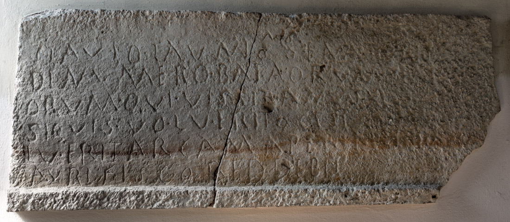

The Inscription of Launio
PHYSICAL DESCRIPTION
- Type
- Frontal slab of the sarcophagus.
- Material(s)
- Limestone.
- Execution
- Inscribed.
- Dimensions
- 63 × 155 cm
- Epigraphic Field
- 54 × 155 cm
- Letters Height
- 5-6 cm
Palaeographic comment
Dextrorse direction, horizontal alignment, vertical module, irregular ductus, left-aligned layout.

INSCRIPTION
INTERPRETATIVE TRANSCRIPTION
, senatọṛị{ị}
de numero Bataorum (!)
seni
=
orum, qui vissit (!) an<n>⸢i⸣s
XL.
Si quis voluerit oc (!)
est[er] (!)
[vo]
=
luerit arcam aperire
p(ondo)
II
auri fisco reddebit (!).
APPARATUS CRITICUS
1. FL(AVI), Lettich 1983; FL(AVIVS),
EDR097900
LAVNIO‵NI′, , Bertolini 1876b; LAVNIO N[---]S,
ILS 2802
SIM‵I′[---], Bertolini 1876a; SEMAFORO, Bertolini 1876b, Bertolini 1877,
CIL V 8752,
ILS 2802,
ILCV 460
.
2-3. BATAOR[---]/ ORVM, Bertolini 1876a; BATAORIVNI[---]/ORVM, Bertolini 1876b, Bertolini 1877; BATAORVM [S]ENI/ORVM, Hoffmann 1963
.
3. A[---], Bertolini 1876a; ANNOS XL, Bertolini 1877,
CIL V 8752,
ILS 2802,
ILCV 460
.
4-5. O[---]/LVERIT, Bertolini 1876a, Bertolini 1877; OC EST S[---]/LVERIT,
CIL V 8752,
ILS 2802,
ILCV 460, Scarpa Bonazza Buora Veronese 1978; OC EST[VO]/LVERIT, .
5. APER[---], Bertolini 1876a
.
6. REDDE[---], Bertolini 1876a; REDDEBIT [---], Bertolini 1877
.
TRANSLATION
To Flavius Launio, senator of the numerus of the Batavi seniores, who lived 40 years.
If anyone, that is a stranger, should wish to open the sarcophagus, he shall pay two (Roman) pounds of gold to the fiscus.
PEOPLE
Flavius Launio
- NOMEN
- Flavius
- COGNOMEN
- Launio
- GENS
- Flavia
- ORIGIN (of the name Launio)
- celtic
- GENDER
- male
- OCCUPATION
- soldier
- RANK
- senator
- NUMERUS
- Batavi Seniores
- ROLE
- deceased
Bibliography
- EDR
-
EDR097900
- Author of the record:
- Damiana Baldassarra
- Date:
- 22-11-2007
COMMENTARY
Flavius Launio was a senator of the Batavi seniores.
Lettich believes that the name of the deceased was declined in the genitive (Lettich 1983, 81-82), ignoring, however, that the nomen Flavius is written in full in this epigraph and declined in the dative. The term senator also appears to be declined in the dative, despite the presence of a superfluous second letter i. It is therefore more likely that the cognomen Launio was erroneously declined in the genitive.
The dedicator of this burial remains uncertain: no other names are mentioned besides that of the deceased, and the latter does not claim the purchase of his own sarcophagus, as is found in many other sarcophagi in the necropolis. The dedicators could be identified with the colleagues of Launio; this hypothesis is particularly plausible if one decides to supplement the end of the fourth line with oc(:hoc) est[er](:exter), which could be interpreted as the prohibition of the reuse of the sarcophagus by anyone who was not part of the numerus of the Batavorum seniorum.
The origin of the name Launio remains uncertain. Holder traces it back to a Celtic substrate, a hypothesis that appears plausible given the persistence of such onomastics in provincial recruitment areas (Holder 1904, 158-159). However, it cannot be ruled out that it may be a variant of the Germanic name Lanio, recorded by Schönfeld (Schönfeld 1911, 282), especially considering the military context of the Batavi seniores in which the deceased served.
The text presents typical phenomena of Vulgar Latin, reflecting the pronunciation of the period: the assimilation of the /ks/ cluster in vissit (for vixit) and the dropping of the intervocalic semi-vowel in Bataorum (for Batavorum), evidencing a spoken language already distant from classical standards.